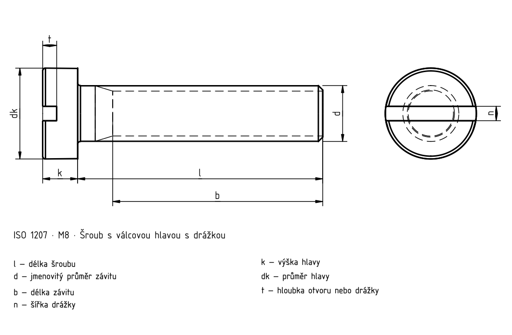

Šrouby s válcovou hlavou s drážkou
Historický podklad; číselné hodnoty a výjimky nejsou úplně ověřené proti platné normě.

Šrouby s válcovou hlavou s drážkou
| d | Rozteč P | a _max. | b _min. | d _k max.1) | d _k min.1) | d _a max.1) | k _max. | k _min. | n | n _max. | n _min. | r _min. | t _min. | w _min. | x _max. |
|---|---|---|---|---|---|---|---|---|---|---|---|---|---|---|---|
| M1,6 | 0,35 | 0,7 | 25 | 3,0 | 2,86 | 2 | 1,1 | 0,96 | 0,4 | 0,6 | 0,46 | 0,1 | 0,45 | 0,4 | 0,9 |
| M2 | 0,4 | 0,8 | 25 | 3,8 | 3,62 | 2,6 | 1,4 | 1,26 | 0,5 | 0,7 | 0,56 | 0,1 | 0,6 | 0,5 | 1 |
| M2,5 | 0,45 | 0,9 | 25 | 4,5 | 4,32 | 3,1 | 1,8 | 1,66 | 0,6 | 0,8 | 0,66 | 0,1 | 0,7 | 0,7 | 1,1 |
| M3 | 0,5 | 1 | 25 | 5,5 | 5,32 | 3,6 | 2 | 1,86 | 0,8 | 1 | 0,86 | 0,1 | 0,85 | 0,75 | 1,25 |
| (M3,5) | 0,6 | 1,2 | 38 | 6,0 | 5,82 | 4,1 | 2,4 | 2,26 | 1 | 1,2 | 1,06 | 0,1 | 1 | 1 | 1,5 |
| M4 | 0,7 | 1,4 | 38 | 7,0 | 6,78 | 4,7 | 2,6 | 2,46 | 1,2 | 1,51 | 1,26 | 0,2 | 1,1 | 1,1 | 1,75 |
| M5 | 0,8 | 1,6 | 38 | 8,5 | 8,28 | 5,7 | 3,3 | 3,12 | 1,2 | 1,51 | 1,26 | 0,2 | 1,3 | 1,3 | 2 |
| M6 | 1 | 2 | 38 | 10,0 | 9,78 | 6,8 | 3,9 | 3,6 | 1,6 | 1,91 | 1,66 | 0,25 | 1,6 | 1,6 | 2,5 |
| M8 | 1,25 | 2,5 | 38 | 13,0 | 12,73 | 9,2 | 5 | 4,7 | 2 | 2,31 | 2,06 | 0,4 | 2 | 2 | 3,2 |
| M10 | 1,5 | 3 | 38 | 16,0 | 15,73 | 11,2 | 6 | 5,7 | 2,5 | 2,81 | 2,56 | 0,4 | 2,4 | 2,4 | 3,8 |
Šrouby s válcovou hlavou s drážkou · Orientační hmotnosti
| l | Δl | M1,6 [kg/1000] | M2 [kg/1000] | M2,5 [kg/1000] | M3 [kg/1000] | (M3,5) [kg/1000] | M4 [kg/1000] | M5 [kg/1000] | M6 [kg/1000] | M8 [kg/1000] | M10 [kg/1000] |
|---|---|---|---|---|---|---|---|---|---|---|---|
| 2 | 0,2 | 0,070 [F] | — | — | — | — | — | — | — | — | — |
| 3 | 0,2 | 0,082 [F] | 0,160 [F] | 0,272 [F] | — | — | — | — | — | — | — |
| 4 | 0,24 | 0,094 [F] | 0,179 [F] | 0,302 [F] | 0,515 [F] | — | — | — | — | — | — |
| 5 | 0,24 | 0,105 [F] | 0,198 [F] | 0,332 [F] | 0,560 [F] | 0,786 [F] | 1,07 [F] | — | — | — | — |
| 6 | 0,24 | 0,117 [F] | 0,217 [F] | 0,362 [F] | 0,604 [F] | 0,845 [F] | 1,17 [F] | 2,06 [F] | — | — | — |
| 8 | 0,29 | 0,140 [F] | 0,254 [F] | 0,422 [F] | 0,692 [F] | 0,966 [F] | 1,33 [F] | 2,30 [F] | 3,56 [F] | — | — |
| 10 | 0,29 | 0,163 [F] | 0,291 [F] | 0,482 [F] | 0,780 [F] | 1,08 [F] | 1,47 [F] | 2,55 [F] | 3,92 [F] | 7,85 [F] | — |
| 12 | 0,35 | 0,186 [F] | 0,329 [F] | 0,542 [F] | 0,868 [F] | 1,20 [F] | 1,63 [F] | 2,80 [F] | 4,27 [F] | 8,49 [F] | 14,6 [F] |
| 14 | 0,35 | 0,209 [F] | 0,365 [F] | 0,602 [F] | 0,956 [F] | 1,32 [F] | 1,79 [F] | 3,05 [F] | 4,62 [F] | 9,13 [F] | 15,6 [F] |
| 16 | 0,35 | 0,232 [F] | 0,402 [F] | 0,662 [F] | 1,04 [F] | 1,44 [F] | 1,95 [F] | 3,30 [F] | 4,98 [F] | 9,77 [F] | 16,6 [F] |
| 20 | 0,42 | — | 0,478 [F] | 0,782 [F] | 1,22 [F] | 1,68 [F] | 2,25 [F] | 3,78 [F] | 5,69 [F] | 11,0 [F] | 18,6 [F] |
| 25 | 0,42 | — | — | 0,932 [F] | 1,44 [F] | 1,98 [F] | 2,64 [F] | 4,40 [F] | 6,56 [F] | 12,6 [F] | 21,1 [F] |
| 30 | 0,42 | — | — | — | 1,66 [F] | 2,28 [F] | 3,02 [F] | 5,02 [F] | 7,45 [F] | 14,2 [F] | 23,6 [F] |
| 35 | 0,5 | — | — | — | — | 2,57 [F] | 3,41 [F] | 5,62 [F] | 8,25 [F] | 15,8 [F] | 26,1 [F] |
| 40 | 0,5 | — | — | — | — | — | 3,80 [F] | 6,25 [F] | 9,20 [F] | 17,4 [F] | 28,6 [F] |
| 45 | 0,5 | — | — | — | — | — | — | 6,88 | 10,0 | 18,9 | 31,1 |
| 50 | 0,5 | — | — | — | — | — | — | 7,50 | 10,9 | 20,6 | 33,6 |
| 55 | 0,95 | — | — | — | — | — | — | — | 11,8 | 22,1 | 36,1 |
| 60 | 0,95 | — | — | — | — | — | — | — | 12,7 | 23,7 | 38,6 |
| 65 | 0,95 | — | — | — | — | — | — | — | — | 25,2 | 41,1 |
| 70 | 0,95 | — | — | — | — | — | — | — | — | 26,8 | 43,6 |
| 75 | 0,95 | — | — | — | — | — | — | — | — | 28,3 | 46,1 |
| 80 | 0,95 | — | — | — | — | — | — | — | — | 29,8 | 48,6 |
Šrouby s válcovou hlavou s drážkou · Normový kontext
| Položka | Hodnota |
|---|---|
| Normový kontext | ISO 1207:2011 |
| Výrobní třída | A |
| Pevnostní třída | Úplné znění normy je potřeba k ověření rozměrů, tolerancí a všech podmínek. |
Šrouby s válcovou hlavou s drážkou
| d | Rozteč P | a _max. | b _min. | d _k max.1) | d _k min.1) | d _a max.1) |
|---|---|---|---|---|---|---|
| M1,6 | 0,35 | 0,7 | 25 | 3,0 | 2,86 | 2 |
| M2 | 0,4 | 0,8 | 25 | 3,8 | 3,62 | 2,6 |
| M2,5 | 0,45 | 0,9 | 25 | 4,5 | 4,32 | 3,1 |
| M3 | 0,5 | 1 | 25 | 5,5 | 5,32 | 3,6 |
| (M3,5) | 0,6 | 1,2 | 38 | 6,0 | 5,82 | 4,1 |
| M4 | 0,7 | 1,4 | 38 | 7,0 | 6,78 | 4,7 |
| M5 | 0,8 | 1,6 | 38 | 8,5 | 8,28 | 5,7 |
| M6 | 1 | 2 | 38 | 10,0 | 9,78 | 6,8 |
| M8 | 1,25 | 2,5 | 38 | 13,0 | 12,73 | 9,2 |
| M10 | 1,5 | 3 | 38 | 16,0 | 15,73 | 11,2 |
Šrouby s válcovou hlavou s drážkou
| d | k _max. | k _min. | n | n _max. | n _min. | r _min. |
|---|---|---|---|---|---|---|
| M1,6 | 1,1 | 0,96 | 0,4 | 0,6 | 0,46 | 0,1 |
| M2 | 1,4 | 1,26 | 0,5 | 0,7 | 0,56 | 0,1 |
| M2,5 | 1,8 | 1,66 | 0,6 | 0,8 | 0,66 | 0,1 |
| M3 | 2 | 1,86 | 0,8 | 1 | 0,86 | 0,1 |
| (M3,5) | 2,4 | 2,26 | 1 | 1,2 | 1,06 | 0,1 |
| M4 | 2,6 | 2,46 | 1,2 | 1,51 | 1,26 | 0,2 |
| M5 | 3,3 | 3,12 | 1,2 | 1,51 | 1,26 | 0,2 |
| M6 | 3,9 | 3,6 | 1,6 | 1,91 | 1,66 | 0,25 |
| M8 | 5 | 4,7 | 2 | 2,31 | 2,06 | 0,4 |
| M10 | 6 | 5,7 | 2,5 | 2,81 | 2,56 | 0,4 |
Šrouby s válcovou hlavou s drážkou
| d | t _min. | w _min. | x _max. |
|---|---|---|---|
| M1,6 | 0,45 | 0,4 | 0,9 |
| M2 | 0,6 | 0,5 | 1 |
| M2,5 | 0,7 | 0,7 | 1,1 |
| M3 | 0,85 | 0,75 | 1,25 |
| (M3,5) | 1 | 1 | 1,5 |
| M4 | 1,1 | 1,1 | 1,75 |
| M5 | 1,3 | 1,3 | 2 |
| M6 | 1,6 | 1,6 | 2,5 |
| M8 | 2 | 2 | 3,2 |
| M10 | 2,4 | 2,4 | 3,8 |
Šrouby s válcovou hlavou s drážkou · Orientační hmotnosti
| l | Δl | M1,6 [kg/1000] | M2 [kg/1000] | M2,5 [kg/1000] | M3 [kg/1000] | (M3,5) [kg/1000] |
|---|---|---|---|---|---|---|
| 2 | 0,2 | 0,070 [F] | — | — | — | — |
| 3 | 0,2 | 0,082 [F] | 0,160 [F] | 0,272 [F] | — | — |
| 4 | 0,24 | 0,094 [F] | 0,179 [F] | 0,302 [F] | 0,515 [F] | — |
| 5 | 0,24 | 0,105 [F] | 0,198 [F] | 0,332 [F] | 0,560 [F] | 0,786 [F] |
| 6 | 0,24 | 0,117 [F] | 0,217 [F] | 0,362 [F] | 0,604 [F] | 0,845 [F] |
| 8 | 0,29 | 0,140 [F] | 0,254 [F] | 0,422 [F] | 0,692 [F] | 0,966 [F] |
| 10 | 0,29 | 0,163 [F] | 0,291 [F] | 0,482 [F] | 0,780 [F] | 1,08 [F] |
| 12 | 0,35 | 0,186 [F] | 0,329 [F] | 0,542 [F] | 0,868 [F] | 1,20 [F] |
| 14 | 0,35 | 0,209 [F] | 0,365 [F] | 0,602 [F] | 0,956 [F] | 1,32 [F] |
| 16 | 0,35 | 0,232 [F] | 0,402 [F] | 0,662 [F] | 1,04 [F] | 1,44 [F] |
| 20 | 0,42 | — | 0,478 [F] | 0,782 [F] | 1,22 [F] | 1,68 [F] |
| 25 | 0,42 | — | — | 0,932 [F] | 1,44 [F] | 1,98 [F] |
| 30 | 0,42 | — | — | — | 1,66 [F] | 2,28 [F] |
| 35 | 0,5 | — | — | — | — | 2,57 [F] |
| 40 | 0,5 | — | — | — | — | — |
| 45 | 0,5 | — | — | — | — | — |
| 50 | 0,5 | — | — | — | — | — |
| 55 | 0,95 | — | — | — | — | — |
| 60 | 0,95 | — | — | — | — | — |
| 65 | 0,95 | — | — | — | — | — |
| 70 | 0,95 | — | — | — | — | — |
| 75 | 0,95 | — | — | — | — | — |
| 80 | 0,95 | — | — | — | — | — |
Šrouby s válcovou hlavou s drážkou · Orientační hmotnosti
| l | M4 [kg/1000] | M5 [kg/1000] | M6 [kg/1000] | M8 [kg/1000] | M10 [kg/1000] |
|---|---|---|---|---|---|
| 2 | — | — | — | — | — |
| 3 | — | — | — | — | — |
| 4 | — | — | — | — | — |
| 5 | 1,07 [F] | — | — | — | — |
| 6 | 1,17 [F] | 2,06 [F] | — | — | — |
| 8 | 1,33 [F] | 2,30 [F] | 3,56 [F] | — | — |
| 10 | 1,47 [F] | 2,55 [F] | 3,92 [F] | 7,85 [F] | — |
| 12 | 1,63 [F] | 2,80 [F] | 4,27 [F] | 8,49 [F] | 14,6 [F] |
| 14 | 1,79 [F] | 3,05 [F] | 4,62 [F] | 9,13 [F] | 15,6 [F] |
| 16 | 1,95 [F] | 3,30 [F] | 4,98 [F] | 9,77 [F] | 16,6 [F] |
| 20 | 2,25 [F] | 3,78 [F] | 5,69 [F] | 11,0 [F] | 18,6 [F] |
| 25 | 2,64 [F] | 4,40 [F] | 6,56 [F] | 12,6 [F] | 21,1 [F] |
| 30 | 3,02 [F] | 5,02 [F] | 7,45 [F] | 14,2 [F] | 23,6 [F] |
| 35 | 3,41 [F] | 5,62 [F] | 8,25 [F] | 15,8 [F] | 26,1 [F] |
| 40 | 3,80 [F] | 6,25 [F] | 9,20 [F] | 17,4 [F] | 28,6 [F] |
| 45 | — | 6,88 | 10,0 | 18,9 | 31,1 |
| 50 | — | 7,50 | 10,9 | 20,6 | 33,6 |
| 55 | — | — | 11,8 | 22,1 | 36,1 |
| 60 | — | — | 12,7 | 23,7 | 38,6 |
| 65 | — | — | — | 25,2 | 41,1 |
| 70 | — | — | — | 26,8 | 43,6 |
| 75 | — | — | — | 28,3 | 46,1 |
| 80 | — | — | — | 29,8 | 48,6 |
Šrouby s válcovou hlavou s drážkou · Normový kontext
| Položka | Hodnota |
|---|---|
| Normový kontext | ISO 1207:2011 |
| Výrobní třída | A |
| Pevnostní třída | Úplné znění normy je potřeba k ověření rozměrů, tolerancí a všech podmínek. |